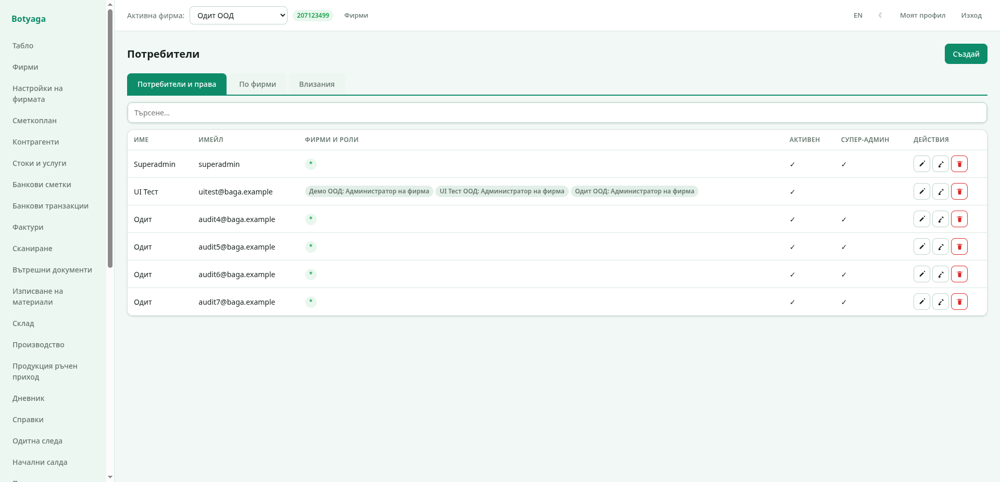

Начало · Потребители и администриране
Потребители и администриране
Достъп, роли, лог на влизанията.
Потребители и права
Потребител (без суперадмин) трябва да е обвързан с фирма и роля. Матрицата потребители × фирми × роли в Потребители дава пълен преглед; има и изглед по фирми. Назначаване/отнемане на ролите се прави от админ панела.
Лог на влизанията
Таб Влизания пази вход/изход, IP и user-agent — само последните 20 дни. Сесиите се прекращават от админ панела.
